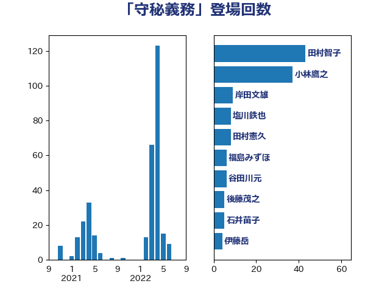

単語「守秘義務」

| 田村智子 | 日本共産党 | 43 回 |
| 小林鷹之 | 自由民主党 | 37 回 |
| 岸田文雄 | 自由民主党 | 9 回 |
| 塩川鉄也 | 日本共産党 | 8 回 |
| 田村憲久 | 自由民主党 | 8 回 |
| 福島みずほ | 社会民主党 | 6 回 |
| 谷田川元 | 立憲民主党 | 6 回 |
| 後藤茂之 | 自由民主党 | 5 回 |
| 石井苗子 | 日本維新の会 | 5 回 |
| 伊藤岳 | 日本共産党 | 4 回 |
| 川田龍平 | 立憲民主党 | 4 回 |
| 平井卓也 | 自由民主党 | 4 回 |
| 渡辺周 | 立憲民主党 | 4 回 |
| 上川陽子 | 自由民主党 | 3 回 |
| 井坂信彦 | 立憲民主党 | 3 回 |
| 堀場幸子 | 日本維新の会 | 3 回 |
| 打越さく良 | 立憲民主党 | 3 回 |
| 柳ヶ瀬裕文 | 日本維新の会 | 3 回 |
| 牧島かれん | 自由民主党 | 3 回 |
| 篠原豪 | 立憲民主党 | 3 回 |
| 紙智子 | 日本共産党 | 3 回 |
| 金子恭之 | 自由民主党 | 3 回 |
| 鈴木俊一 | 自由民主党 | 3 回 |
| 上田清司 | 国民民主党 | 2 回 |
| 丸川珠代 | 自由民主党 | 2 回 |
| 宮本徹 | 日本共産党 | 2 回 |
| 岡本三成 | 公明党 | 2 回 |
| 岩田和親 | 自由民主党 | 2 回 |
| 江島潔 | 自由民主党 | 2 回 |
| 浅野哲 | 国民民主党 | 2 回 |
| 自見はなこ | 自由民主党 | 2 回 |
| 青山大人 | 立憲民主党 | 2 回 |
| 青柳仁士 | 日本維新の会 | 2 回 |
| 一谷勇一郎 | 日本維新の会 | 1 回 |
| 伊藤渉 | 公明党 | 1 回 |
| 佐藤英道 | 公明党 | 1 回 |
| 吉川元 | 立憲民主党 | 1 回 |
| 城井崇 | 立憲民主党 | 1 回 |
| 大串博志 | 立憲民主党 | 1 回 |
| 大口善徳 | 公明党 | 1 回 |
| 大塚耕平 | 国民民主党 | 1 回 |
| 大家敏志 | 自由民主党 | 1 回 |
| 大島敦 | 立憲民主党 | 1 回 |
| 大石あきこ | れいわ新選組 | 1 回 |
| 守島正 | 日本維新の会 | 1 回 |
| 室井邦彦 | 日本維新の会 | 1 回 |
| 宮本岳志 | 日本共産党 | 1 回 |
| 川合孝典 | 国民民主党 | 1 回 |
| 杉尾秀哉 | 立憲民主党 | 1 回 |
| 柚木道義 | 立憲民主党 | 1 回 |
| 梅村聡 | 日本維新の会 | 1 回 |
| 森屋隆 | 立憲民主党 | 1 回 |
| 武田良太 | 自由民主党 | 1 回 |
| 河野太郎 | 自由民主党 | 1 回 |
| 浅田均 | 日本維新の会 | 1 回 |
| 玉木雄一郎 | 国民民主党 | 1 回 |
| 田村まみ | 国民民主党 | 1 回 |
| 秋本真利 | 自由民主党 | 1 回 |
| 笠井亮 | 日本共産党 | 1 回 |
| 緒方林太郎 | 無所属 | 1 回 |
| 羽田次郎 | 立憲民主党 | 1 回 |
| 菅義偉 | 自由民主党 | 1 回 |
| 西村康稔 | 自由民主党 | 1 回 |
| 西田実仁 | 公明党 | 1 回 |
| 角田秀穂 | 公明党 | 1 回 |
| 野田聖子 | 自由民主党 | 1 回 |
| 高木かおり | 日本維新の会 | 1 回 |